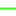
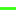

<!doctype html>
<html lang="en">
    <head>
        <meta charset="utf-8">
        <meta http-equiv="X-UA-Compatible" content="IE=edge">
        <meta name="viewport" content="initial-scale=1,user-scalable=no,maximum-scale=1,width=device-width">
        <meta name="mobile-web-app-capable" content="yes">
        <meta name="apple-mobile-web-app-capable" content="yes">
        <link rel="stylesheet" href="css/leaflet.css">
        <link rel="stylesheet" href="css/qgis2web.css"><link rel="stylesheet" href="css/fontawesome-all.min.css">
        <link rel="stylesheet" href="css/MarkerCluster.css">
        <link rel="stylesheet" href="css/MarkerCluster.Default.css">
        <style>
        html, body, #map {
            width: 100%;
            height: 100%;
            padding: 0;
            margin: 0;
        }
        </style>
        <title>A Circuit Diagram Map of UK Electronica & Hauntology by Mapper Monday</title>
    </head>
    <body>
        <div id="map">
        </div>
        <script src="js/qgis2web_expressions.js"></script>
        <script src="js/leaflet.js"></script>
        <script src="js/leaflet.rotatedMarker.js"></script>
        <script src="js/leaflet.pattern.js"></script>
        <script src="js/leaflet-hash.js"></script>
        <script src="js/Autolinker.min.js"></script>
        <script src="js/rbush.min.js"></script>
        <script src="js/labelgun.min.js"></script>
        <script src="js/labels.js"></script>
        <script src="js/proj4.js"></script>
        <script src="js/proj4leaflet.js"></script>
        <script src="js/leaflet.markercluster.js"></script>
        <script src="data/Circuitry_0.js"></script>
        <script src="data/ArtistsLabels_1.js"></script>
        <script>
        var highlightLayer;
        function highlightFeature(e) {
            highlightLayer = e.target;

            if (e.target.feature.geometry.type === 'LineString') {
              highlightLayer.setStyle({
                color: '#ff0400',
              });
            } else {
              highlightLayer.setStyle({
                fillColor: '#ff0400',
                fillOpacity: 1
              });
            }
            highlightLayer.openPopup();
        }
        var crs = new L.Proj.CRS('EPSG:27700', '+proj=tmerc +lat_0=49 +lon_0=-2 +k=0.9996012717 +x_0=400000 +y_0=-100000 +ellps=airy +units=m +no_defs', {
            resolutions: [2800, 1400, 700, 350, 175, 84, 42, 21, 11.2, 5.6, 2.8, 1.4, 0.7, 0.35, 0.14, 0.07],
        });
        var map = L.map('map', {
            crs: crs,
            continuousWorld: false,
            worldCopyJump: false, 
            zoomControl:true, maxZoom:7, minZoom:1
        }).fitBounds([[51.344403908631726,-0.4515587064260863],[51.65651006588177,0.23985464566164674]]);
        var hash = new L.Hash(map);
        map.attributionControl.setPrefix('<a href="https://github.com/tomchadwin/qgis2web" target="_blank">qgis2web</a> &middot; <a href="https://leafletjs.com" title="A JS library for interactive maps">Leaflet</a> &middot; <a href="https://qgis.org">QGIS</a>');
        var autolinker = new Autolinker({truncate: {length: 30, location: 'smart'}});
        var bounds_group = new L.featureGroup([]);
        function setBounds() {
        }
        function pop_Circuitry_0(feature, layer) {
            layer.on({
                mouseout: function(e) {
                    for (i in e.target._eventParents) {
                        e.target._eventParents[i].resetStyle(e.target);
                    }
                    if (typeof layer.closePopup == 'function') {
                        layer.closePopup();
                    } else {
                        layer.eachLayer(function(feature){
                            feature.closePopup()
                        });
                    }
                },
                mouseover: highlightFeature,
            });
            var popupContent = '<table>\
                    <tr>\
                        <td colspan="2">' + (feature.properties['id'] !== null ? autolinker.link(feature.properties['id'].toLocaleString()) : '') + '</td>\
                    </tr>\
                    <tr>\
                        <td colspan="2">' + (feature.properties['Section'] !== null ? autolinker.link(feature.properties['Section'].toLocaleString()) : '') + '</td>\
                    </tr>\
                    <tr>\
                        <td colspan="2">' + (feature.properties['Hierarchy'] !== null ? autolinker.link(feature.properties['Hierarchy'].toLocaleString()) : '') + '</td>\
                    </tr>\
                </table>';
            layer.bindPopup(popupContent, {maxHeight: 400});
        }

        function style_Circuitry_0_0(feature) {
            if (feature.properties['Hierarchy'] >= 0.000000 && feature.properties['Hierarchy'] <= 1.000000 ) {
                return {
                pane: 'pane_Circuitry_0',
                opacity: 1,
                color: 'rgba(57,255,20,1.0)',
                dashArray: '',
                lineCap: 'square',
                lineJoin: 'bevel',
                weight: 2.0,
                fillOpacity: 0,
                interactive: false,
            }
            }
            if (feature.properties['Hierarchy'] >= 1.000000 && feature.properties['Hierarchy'] <= 2.000000 ) {
                return {
                pane: 'pane_Circuitry_0',
                opacity: 1,
                color: 'rgba(57,255,20,1.0)',
                dashArray: '',
                lineCap: 'square',
                lineJoin: 'bevel',
                weight: 3.0,
                fillOpacity: 0,
                interactive: false,
            }
            }
            if (feature.properties['Hierarchy'] >= 2.000000 && feature.properties['Hierarchy'] <= 3.000000 ) {
                return {
                pane: 'pane_Circuitry_0',
                opacity: 1,
                color: 'rgba(57,255,20,1.0)',
                dashArray: '',
                lineCap: 'square',
                lineJoin: 'bevel',
                weight: 5.0,
                fillOpacity: 0,
                interactive: false,
            }
            }
            if (feature.properties['Hierarchy'] >= 3.000000 && feature.properties['Hierarchy'] <= 4.000000 ) {
                return {
                pane: 'pane_Circuitry_0',
                opacity: 1,
                color: 'rgba(57,255,20,1.0)',
                dashArray: '',
                lineCap: 'square',
                lineJoin: 'bevel',
                weight: 7.0,
                fillOpacity: 0,
                interactive: false,
            }
            }
        }
        map.createPane('pane_Circuitry_0');
        map.getPane('pane_Circuitry_0').style.zIndex = 400;
        map.getPane('pane_Circuitry_0').style['mix-blend-mode'] = 'normal';
        var layer_Circuitry_0 = new L.geoJson(json_Circuitry_0, {
            attribution: '',
            interactive: false,
            dataVar: 'json_Circuitry_0',
            layerName: 'layer_Circuitry_0',
            pane: 'pane_Circuitry_0',
            onEachFeature: pop_Circuitry_0,
            style: style_Circuitry_0_0,
        });
        bounds_group.addLayer(layer_Circuitry_0);
        map.addLayer(layer_Circuitry_0);
        function pop_ArtistsLabels_1(feature, layer) {
            layer.on({
                mouseout: function(e) {
                    for (i in e.target._eventParents) {
                        e.target._eventParents[i].resetStyle(e.target);
                    }
                    if (typeof layer.closePopup == 'function') {
                        layer.closePopup();
                    } else {
                        layer.eachLayer(function(feature){
                            feature.closePopup()
                        });
                    }
                },
                mouseover: highlightFeature,
            });
            var popupContent = '<table>\
                    <tr>\
                        <td colspan="2">' + (feature.properties['Name'] !== null ? autolinker.link(feature.properties['Name'].toLocaleString()) : '') + '</td>\
                    </tr>\
                    <tr>\
                        <td colspan="2">' + (feature.properties['Graphic'] !== null ? '' : '') + '</td>\
                    </tr>\
                    <tr>\
                        <td colspan="2">' + (feature.properties['Location'] !== null ? autolinker.link(feature.properties['Location'].toLocaleString()) : '') + '</td>\
                    </tr>\
                    <tr>\
                        <td colspan="2">' + (feature.properties['URL'] !== null ? autolinker.link(feature.properties['URL'].toLocaleString()) : '') + '</td>\
                    </tr>\
                </table>';
            layer.bindPopup(popupContent, {maxHeight: 400});
        }

        function style_ArtistsLabels_1_0(feature) {
            if (feature.properties['q2wHide_Type'] >= 1.000000 && feature.properties['q2wHide_Type'] <= 1.000000 ) {
                return {
                pane: 'pane_ArtistsLabels_1',
                radius: 6.0,
                opacity: 1,
                color: 'rgba(255,221,0,1.0)',
                dashArray: '',
                lineCap: 'butt',
                lineJoin: 'miter',
                weight: 1,
                fill: true,
                fillOpacity: 1,
                fillColor: 'rgba(255,221,0,1.0)',
                interactive: true,
            }
            }
            if (feature.properties['q2wHide_Type'] >= 1.000000 && feature.properties['q2wHide_Type'] <= 2.000000 ) {
                return {
                pane: 'pane_ArtistsLabels_1',
                radius: 7.2,
                opacity: 1,
                color: 'rgba(255,221,0,1.0)',
                dashArray: '',
                lineCap: 'butt',
                lineJoin: 'miter',
                weight: 2.0,
                fill: true,
                fillOpacity: 1,
                fillColor: 'rgba(4,99,7,1.0)',
                interactive: true,
            }
            }
        }
        map.createPane('pane_ArtistsLabels_1');
        map.getPane('pane_ArtistsLabels_1').style.zIndex = 401;
        map.getPane('pane_ArtistsLabels_1').style['mix-blend-mode'] = 'normal';
        var layer_ArtistsLabels_1 = new L.geoJson(json_ArtistsLabels_1, {
            attribution: '',
            interactive: true,
            dataVar: 'json_ArtistsLabels_1',
            layerName: 'layer_ArtistsLabels_1',
            pane: 'pane_ArtistsLabels_1',
            onEachFeature: pop_ArtistsLabels_1,
            pointToLayer: function (feature, latlng) {
                var context = {
                    feature: feature,
                    variables: {}
                };
                return L.circleMarker(latlng, style_ArtistsLabels_1_0(feature));
            },
        });
        var cluster_ArtistsLabels_1 = new L.MarkerClusterGroup({showCoverageOnHover: false,
            spiderfyDistanceMultiplier: 2});
        cluster_ArtistsLabels_1.addLayer(layer_ArtistsLabels_1);

        bounds_group.addLayer(layer_ArtistsLabels_1);
        cluster_ArtistsLabels_1.addTo(map);
            var title = new L.Control();
            title.onAdd = function (map) {
                this._div = L.DomUtil.create('div', 'info');
                this.update();
                return this._div;
            };
            title.update = function () {
                this._div.innerHTML = '<h2>A Circuit Diagram Map of UK Electronica & Hauntology by Mapper Monday</h2>';
            };
            title.addTo(map);
        var baseMaps = {};
        L.control.layers(baseMaps,{'Artists & Labels<br /><table><tr><td style="text-align: center;"></td><td>Artists</td></tr><tr><td style="text-align: center;"></td><td>Labels</td></tr></table>': cluster_ArtistsLabels_1,'Circuitry<br /><table><tr><td style="text-align: center;"></td><td>Branch Circuits</td></tr><tr><td style="text-align: center;"></td><td>Metro Circuits</td></tr><tr><td style="text-align: center;"></td><td>Provincial Circuits</td></tr><tr><td style="text-align: center;"></td><td>Mainline Circuits</td></tr></table>': layer_Circuitry_0,},{collapsed:false}).addTo(map);
        setBounds();
        </script>
    </body>
</html>
